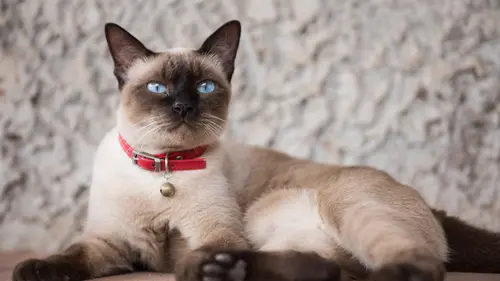
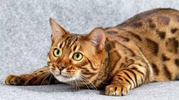
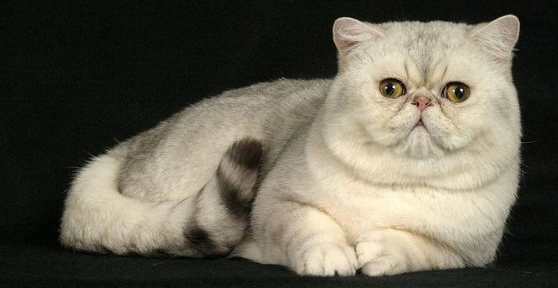
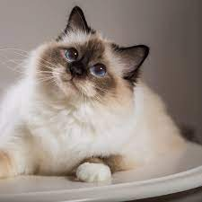
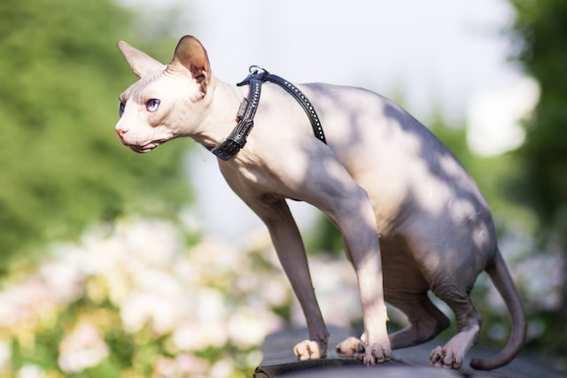
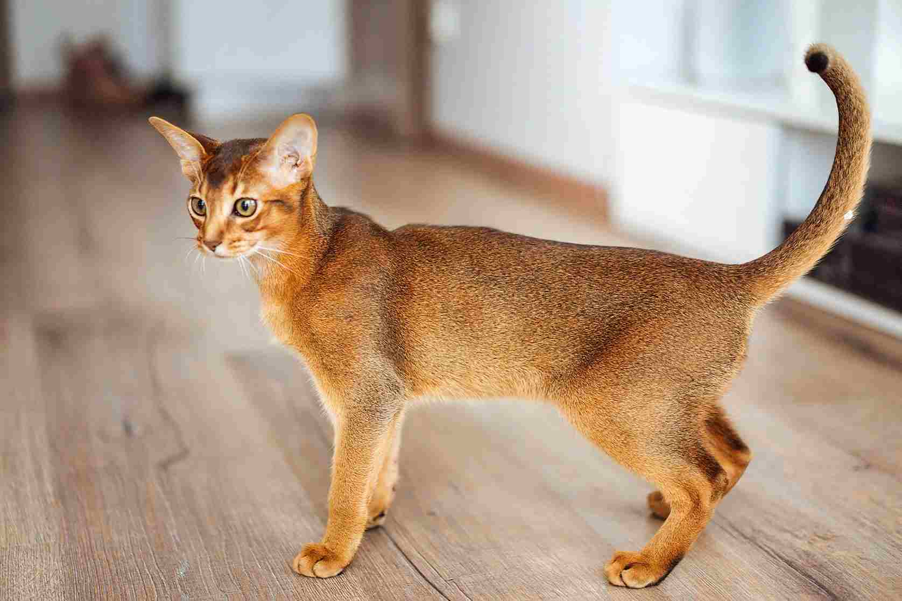
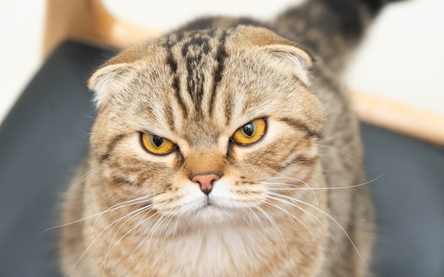

Kucing maine coon merupakan salah satu jenis kucing persia yang disebut sebagai spesies terbesar di dunia.
Tidak heran jika kucing maine coon sering dijuluki sebagai kucing raksasa atau giant cat.
Selain tubuhnya yang besar, terdapat beberapa karakteristik kucing maine coon yang tidak kalah unik.
Mulai dari bentuk wajah yang mirip seperti singa, bulu yang lebat, hingga ekornya yang panjang.
Jika Anda penggemar kucing dengan bulu yang lebat dan tubuh yang besar, tentu Anda akan jatuh cinta dengan jenis kucing yang satu ini.

Kucing Siam
Kucing siam adalah salah satu ras kucing pertama yang diakui jelas sebagai kucing berjenis oriental.
Sesuai dengan namanya, kucing siam berasal dari negara Siam (sekarang Thailand),
sehingga ras kucing ini sangat mudah ditemukan di negara Thailand.Ras Kucing Siam tergolong kucing aktif yang sangat menyukai waktu bermain. Oleh karena itu,
bermainlah bersama mereka untuk menumbuhkan ikatan yang erat dengan Anda. Perhatikan bahwa Kucing Siam adalah kucing yang sangat energik dan mudah terkesan bahkan oleh bentuk hiburan sesederhana apapun, seperti kotak kardus.

Kucing Bengal
Kucing bengal adalah keturunan keempat dari hasil persilangan antara kucing american shorthair dengan kucing asian leopard. Kucing ini berasal dari California, Amerika Serikat.
Meskipun tergolong kucing hutan,tetapi ras bengal termasuk hewan yang banyak digemari dan dijadikan hewan peliharaan.
Kucing Bengal adalah ras kucing domestik yang memiliki pola bulu seperti pada macan tutul atau jaguar.

Kucing Exotic Shorthair
Kucing exotic shorthair dijuluki sebagai kucing Persia "pemalas" karena memiliki ciri-ciri wajah yang sama, yakni datar tapi bulunya lebih pendek.
Kucing exotic shorhair memiliki tampilan wajah rata atau datar, telinga kecil, dan kaki pendek. Berbeda dengan Persia, bulu kucing exotic shorthair lebih pendek, lebat, juga mewah.
Kucing Exotic Shorthair adalah kucing berukuran sedang yang lembut dan cenderung memiliki ikatan kuat dengan pemiliknya, bergaul dengan hewan peliharaan dan anak-anak, serta memiliki kepribadian manis.

Kucing Birman
Birman adalah jenis kucing yang besar dengan tubuh rimbun dan tungkai pendek. Kucing Birman memiliki mata berwarna biru dengan kaki-kaki berwarna putih bersih.
rambut kaki di depan hanya menutupi tungkai, tetapi di bagian belakang bisa lebih panjang.

Kucing Sphynx
Kucing sphynx (dahulu bernama Canadian hairless) adalah salah satu ras kucing yang memiliki bulu sangat pendek dan sedikit sekali.
Jika dilihat sekilas, kucing sphynx tampak tidak memiliki bulu sama sekali, tetapi jika diamati lebih saksama tubuh kucing ini ditumbuhi rambut halus di beberapa bagian, seperti telinga, kaki, ekor, dan didekat organ kelamin.
Kucing sphynx berasal dari Kanada.Namun, penyebarannya dapat ditemukan di beberapa tempat seperti Kanada, Prancis, Maroko, Meksiko, Rusia, Australia dan Amerika Serikat.Kucing ras sphynx merupakan salah satu jenis kucing hasil rekayasa genetik.

Kucing Abyssinians
Kucing abisinia adalah salah satu ras kucing berbulu pendek tertua yang pernah diketahui. Abisinia menyerupai lukisan dan patung yang berasal dari zaman Mesir Kuno. Perdagangan ras kucing ini dilarang oleh bangsa Mesir.
Selain itu, bangsa Mesir juga mendirikan kuil khusus untuk memuja abisinia.

Kucing Scottish Fold
Kucing telinga lipat skotlandia adalah salah satu ras kucing alami yang berasal dari Skotlandia. Ciri khas dan keunikannya adalah terdapat pada telingnya yang melipat,
sehingga ras ini disebut dengan kucing berwajah burung hantu atau kucing coupari.